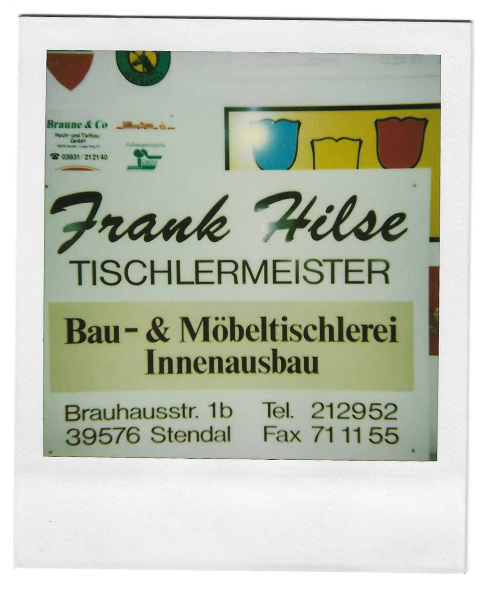

Warum dieses Archiv?
Unser Ursprung findet sich im familiengeführten Malerfachbetrieb mit dem Zweig Werbung und Siebdruck. Der ehemalige Unternehmer und Geschäftsführer vom Malerfachbetrieb Herr Bodo Fleischer hat die Abteilung "Werbung und Siebdruck" intern gegründet und somit eine weitere Spate an Leistungen verwirklicht. Gemeinsam haben wir mit zahlreichen Kunden eine Vielzahl an Projekten umsetzen dürfen. Diese Projekte, die ein Teil unserer Geschichte sind, haben wir hier für Sie zusammengestellt. Es sind nicht nur historische Arbeiten – sondern auch eine Dokumentation über Erfahrung, handwerkliche Kontinuität und Qualität seit der Gründung.
Unser Ursprung findet sich im familiengeführten Malerfachbetrieb mit dem Zweig Werbung und Siebdruck. Der ehemalige Unternehmer und Geschäftsführer vom Malerfachbetrieb Herr Bodo Fleischer hat die Abteilung "Werbung und Siebdruck" intern gegründet und somit eine weitere Spate an Leistungen verwirklicht. Gemeinsam haben wir mit zahlreichen Kunden eine Vielzahl an Projekten umsetzen dürfen. Diese Projekte, die ein Teil unserer Geschichte sind, haben wir hier für Sie zusammengestellt. Es sind nicht nur historische Arbeiten – sondern auch eine Dokumentation über Erfahrung, handwerkliche Kontinuität und Qualität seit der Gründung.
Projekte von 1990–2001
Die folgenden Archivbilder sind ausgewählte Projekte aus den Ursprungsjahren unserers Unternehmens. Wir haben vielfältige Beschriftungen für Fahrzeuge, Schilder, Planen und vielem mehr realisiert - regional und überregional.





© 2026 PrintLine Werbetechnik - Alle Rechte vorbehalten
| |
| |